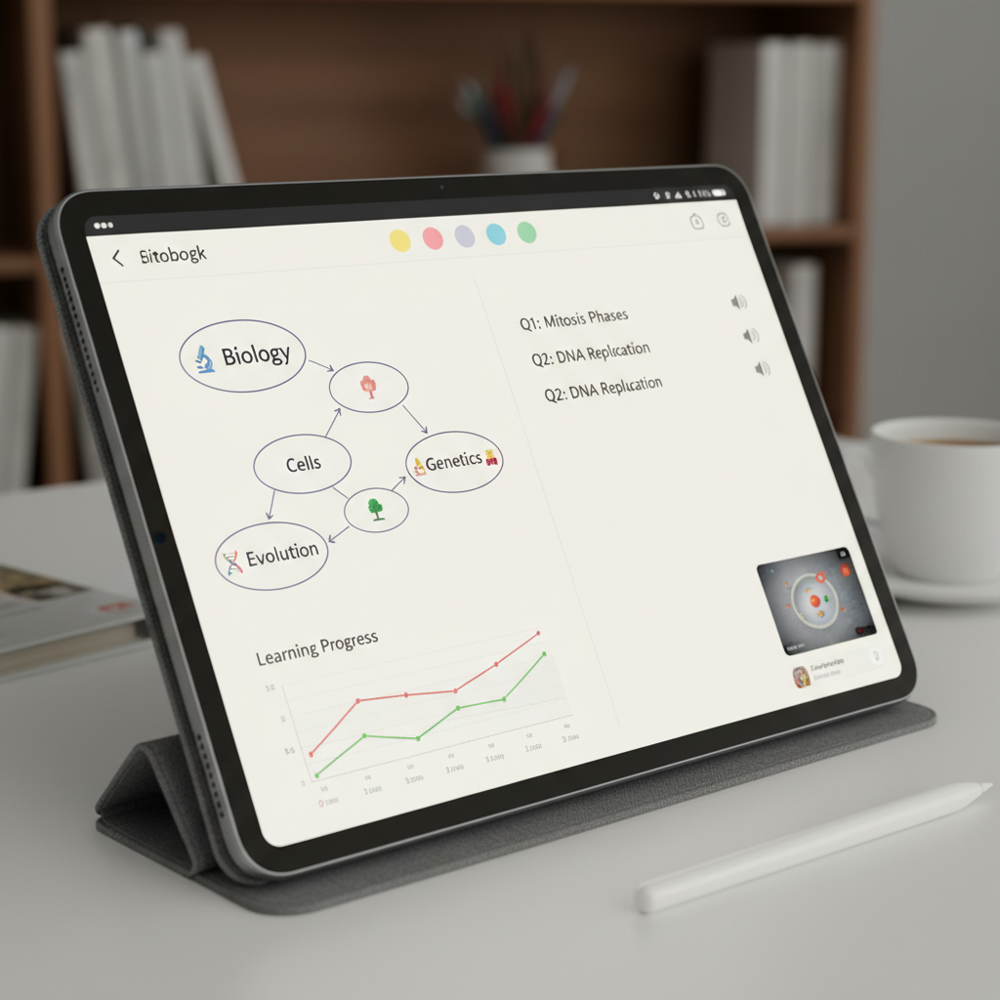
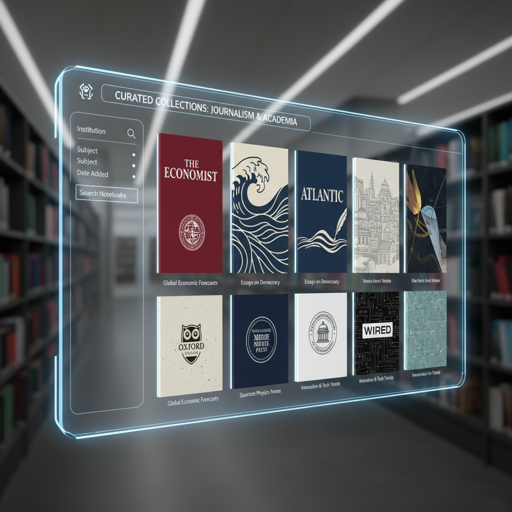

방대한 정보의 홍수 속에서 길을 잃고 헤매본 적 없으신가요?
우리는 매일같이 쏟아지는 정보 속에서 살고 있습니다. 새로운 기술을 배우거나, 복잡한 사회 현상을 이해하거나, 단순히 궁금한 주제를 깊이 파고들고 싶을 때, 어디서부터 시작해야 할지 막막했던 경험, 한 번쯤은 있으실 겁니다. 신뢰할 수 있는 정보를 찾고, 그 내용을 온전히 내 것으로 만드는 과정은 결코 쉽지 않죠.
만약, 최고의 전문가들이 엄선한 고품질 자료를 바탕으로, AI와 대화하며 궁금증을 해결하고, 핵심 내용을 한눈에 파악할 수 있다면 어떨까요? 구글의 AI 기반 연구 및 글쓰기 도우미, NotebookLM이 새롭게 선보이는 “Featured Notebooks” 기능이 바로 그 상상을 현실로 만들어 드립니다.
핵심 요약: Featured Notebooks, 무엇이 특별할까요?
Featured Notebooks는 단순히 정보를 모아놓은 것을 넘어, 사용자가 지식을 효과적으로 탐색하고 활용할 수 있도록 돕는 강력한 기능들을 제공합니다. 그중 가장 주목해야 할 세 가지 핵심은 다음과 같습니다.
- 전문가가 엄선한 고품질 콘텐츠: 저명한 작가, 연구원, 언론사(The Economist, The Atlantic 등)가 직접 선별한 신뢰도 높은 자료가 미리 준비되어 있습니다. 더 이상 정보의 출처를 의심하며 시간을 낭비할 필요가 없습니다.
- AI와 함께하는 능동적인 학습: 궁금한 점을 AI에게 질문하고, 자료에 근거한 답변을 즉시 얻을 수 있습니다. 단순한 정보 전달을 넘어, AI와의 대화를 통해 깊이 있는 탐구가 가능해집니다.
- 시간을 절약해주는 스마트한 기능: 복잡한 내용을 시각적으로 정리한 ‘마인드맵’과 핵심만 요약해 들려주는 ’오디오 개요’ 기능으로 방대한 자료도 빠르고 쉽게 이해할 수 있습니다.
상세 설명: Featured Notebooks, 어떻게 활용할 수 있을까요?
1. 신뢰할 수 있는 지식의 보고: 전문가가 큐레이팅한 콘텐츠
“Featured Notebooks”의 가장 큰 장점은 콘텐츠의 질입니다. 구글은 각 분야의 전문가 및 유수의 기관들과의 파트너십을 통해 과학, 역사, 시사, 예술 등 다양한 주제에 대한 노트북을 제공합니다.

예시: The Economist가 제공하는 ‘A new era for economics’ 노트북을 통해 복잡한 현대 경제학의 흐름을 심도 있게 공부하거나, The Atlantic의 자료로 ’The new rules of friendship’에 대한 사회적 통찰을 얻을 수 있습니다. 사용자는 이미 검증된 양질의 자료 위에서 탐색을 시작하므로, 정보의 신뢰도를 걱정할 필요 없이 내용 자체에만 집중할 수 있습니다.
2. AI 튜터와 함께하는 개인화된 학습 경험
단순히 자료를 읽는 것에서 그치지 않습니다. “Featured Notebooks”는 사용자가 AI와 상호작용하며 지식을 습득할 수 있는 환경을 제공합니다.
예시: 과학 탐구 노트북을 보다가 ’양자 얽힘’이라는 개념이 이해되지 않는다면, 채팅창에 바로 “양자 얽힘에 대해 더 쉽게 설명해줘”라고 질문할 수 있습니다. NotebookLM은 제공된 자료를 바탕으로, 출처가 명시된 답변을 생성해 줍니다. 이는 마치 24시간 대기하는 전문 튜터와 함께 공부하는 것과 같은 효과를 줍니다.
3. 본질에 집중하게 만드는 시간 효율적 도구들
방대한 텍스트를 모두 읽지 않아도 핵심을 파악할 수 있도록 돕는 기능들도 탑재되어 있습니다.
예시: 노트북을 열면, 가장 먼저 ’마인드맵’이 주요 테마와 개념들을 시각적으로 보여줍니다. 전체적인 구조를 빠르게 파악한 후, ’오디오 개요’를 통해 핵심 내용을 음성으로 들으며 세부 사항으로 들어갈 준비를 할 수 있습니다. 이 두 가지 기능만으로도 사용자는 자료를 탐색하는 데 드는 시간을 획기적으로 줄이고, 중요한 본질에 더 집중할 수 있습니다.
마무리: 지식 탐구의 새로운 지평을 열다
NotebookLM의 “Featured Notebooks” 기능은 단순한 정보 제공을 넘어, 신뢰할 수 있는 지식에 대한 접근성을 민주화하고, AI와의 상호작용을 통해 학습의 패러다임을 바꾸고 있습니다. 이는 개인이 전문가 수준의 자료를 바탕으로 더 깊이 있는 질문을 던지고, 창의적인 통찰을 얻을 수 있는 새로운 시대를 예고합니다.
앞으로 이러한 AI 기반 학습 도구는 교육, 연구, 콘텐츠 제작 등 다양한 분야에서 개인의 지적 능력을 증폭시키는 핵심적인 역할을 하게 될 것입니다. 정보의 홍수 속에서 방향을 제시하는 등대를 넘어, 함께 항해하는 든든한 파트너로서 AI가 우리의 지식 탐구 여정을 어떻게 바꾸어 나갈지 기대해 봅니다.